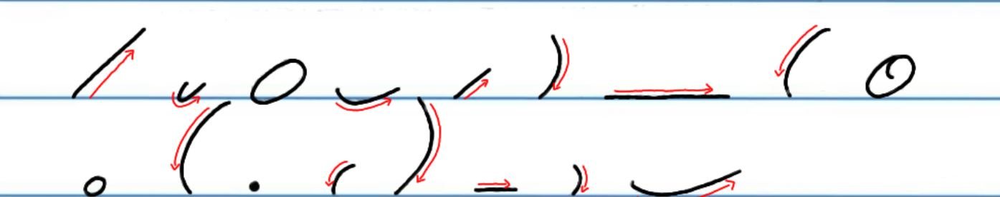
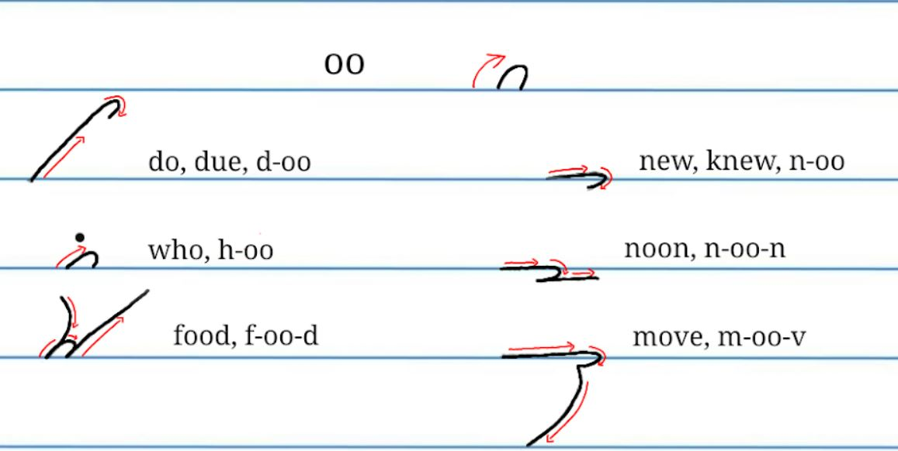
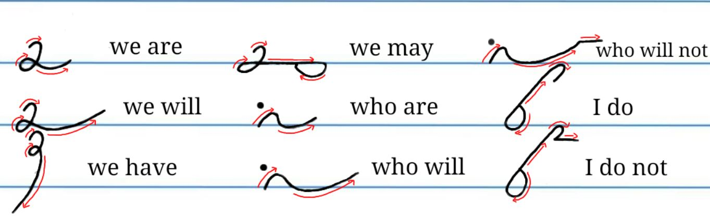
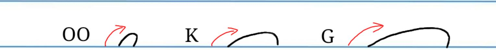
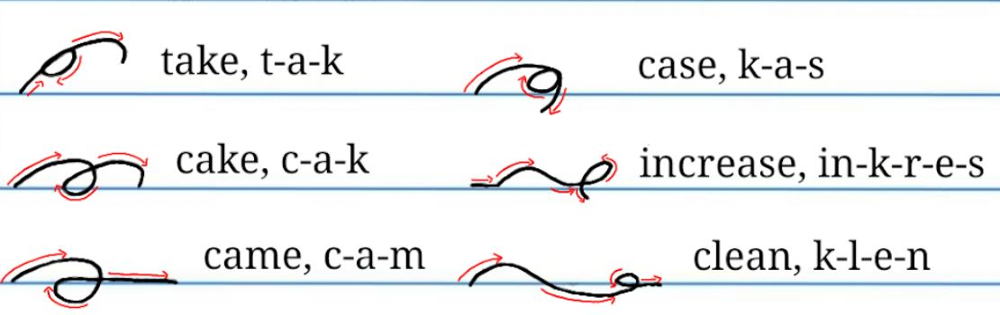
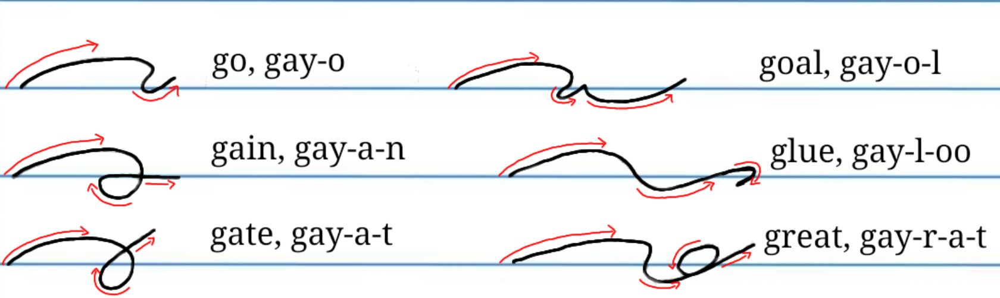

Chapter 1: Gregg Shorthand
LESSON 4
Principles
You have already studied 17 strokes in the Gregg Shorthand alphabet. How fast can you read them?

The shorthand stroke for the sound of oo, as in to, is a tiny upward hook.

* Observe that the oo is placed on its side when it follows n or m, as in new, noon, move. By placing the hook on its side in these combinations rather than writing it upright, we obtain smooth joinings.
At the beginning of words w. as in we, is represented by the oo hook; sw, as in sweet, by s-oo.

Wh, as in why and while, is also represented by the oo hook.
Here are a number of useful phrases that use the oo hook.

The shorthand stroke for t is a short upward straight line. The shorthand stroke for d is a longer upward straight line.

K

G

Challenge Zone
Challenge yourselves by transcribing this picture below
Transcribe the following into shorthand:
1. A & B _______________
2. S, F, V _______________
3. N, M _______________
4. T, D _______________